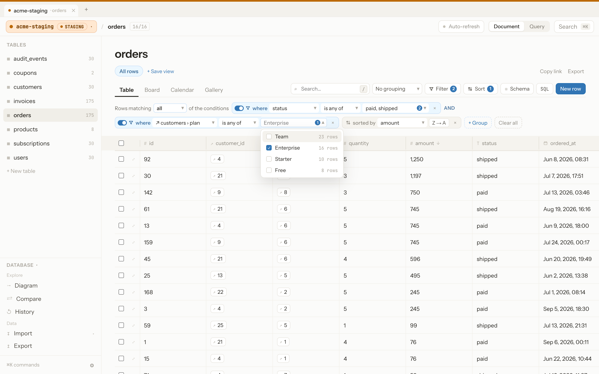
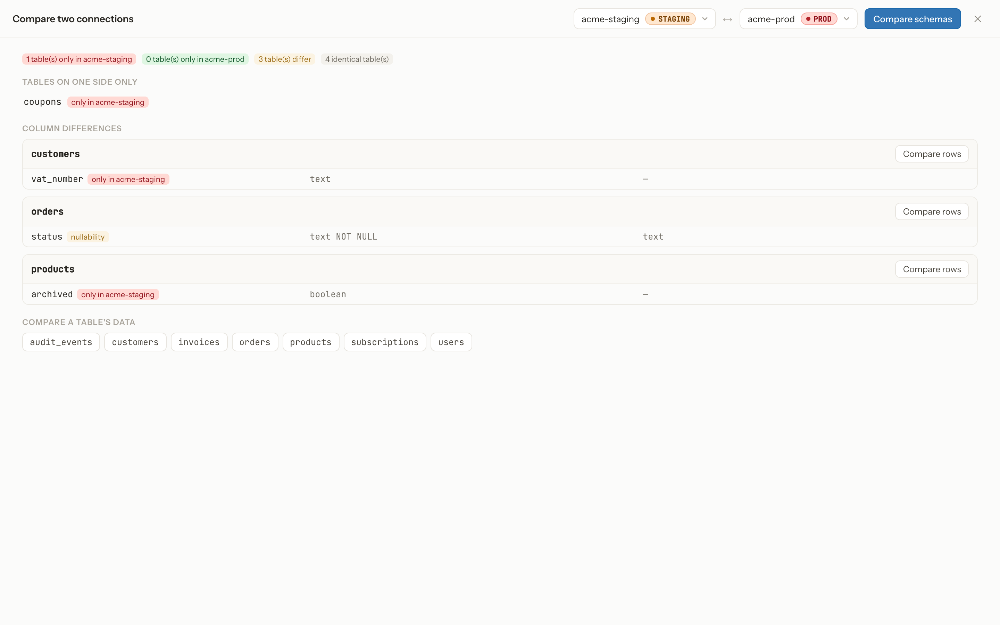
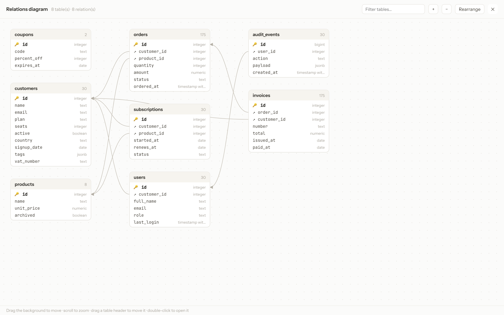

The database editor that
can't lie to you about prod
Overlook is a free, open-source, 100% web database editor with the UI/UX of a Notion-style tool — built around one rule: you should never be able to mistake a local database for a production one.

One misclick against the wrong connection shouldn't be able to take down production. So the app makes that connection impossible to miss — and impossible to act on by accident.
Everything a database GUI should have —
plus the guardrails it usually skips
Every connection, clearly labeled
PostgreSQL, MySQL, and SQLite side by side, each tagged Local, Dev, Staging, Prod, or Custom and filed into folders. Connect through SSH tunnels, with verified TLS certificates.
Production guardrails
On prod, deleting rows, changing the schema, or running a write query means typing the connection's name. Bulk and schema changes show the exact SQL and the rows affected first.
Filters that follow foreign keys
Filter on several values, match all or any condition, group conditions, and filter on columns of related tables. Suggested values show how many rows each one keeps.
Compare and map
Diff the schemas and rows of two connections, say staging and prod, and draw a relations diagram of every table.
Send data across connections
Copy selected rows or whole tables to another connection, such as a slice of prod into your local database.
Change log with undo
Every write is recorded in a persistent log you can browse and filter. Made a mistake on a non-prod table? Undo it in one click.
SQL console
Saved queries and a query history. The read-only mode is enforced by the database itself, not just by the UI.
Import & export
CSV import, and big SQL scripts run in batched transactions with live progress. Export to SQL, CSV, or NDJSON.
Fast, keyboard-first
Table, Board, Calendar, and Gallery views, saved views and shareable links, ⌘K and shortcuts, and copy-paste of cell ranges.
Confirm by typing the connection's name
On a connection tagged "prod," deleting rows, altering the schema, or running a raw write query stays blocked until you type the connection's name, with the exact SQL in front of you.

Filter through relations
Keep the orders whose customer is on the Enterprise plan without writing a join. Every suggested value shows how many rows it would keep, and the whole view can be shared as a link.

See what differs between two databases
Pick two connections to list the tables and columns found on one side only or defined differently, then compare a table's rows.

Your schema at a glance
Every table with its columns and foreign keys, laid out automatically. Drag, zoom, and double-click a table to open it.

⌘K to go anywhere
Jump to a table, switch view, or run a command without touching the mouse. Built for people who live in their editor.

Free. Open-source. Self-hosted.
Run it on your own machine, point it at your databases, and never mix up an environment again. It listens on localhost by default and is hardened against DNS rebinding and CSRF.